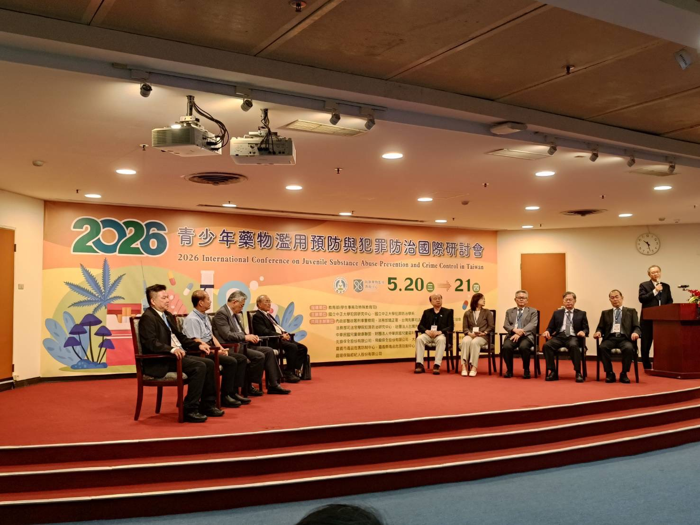
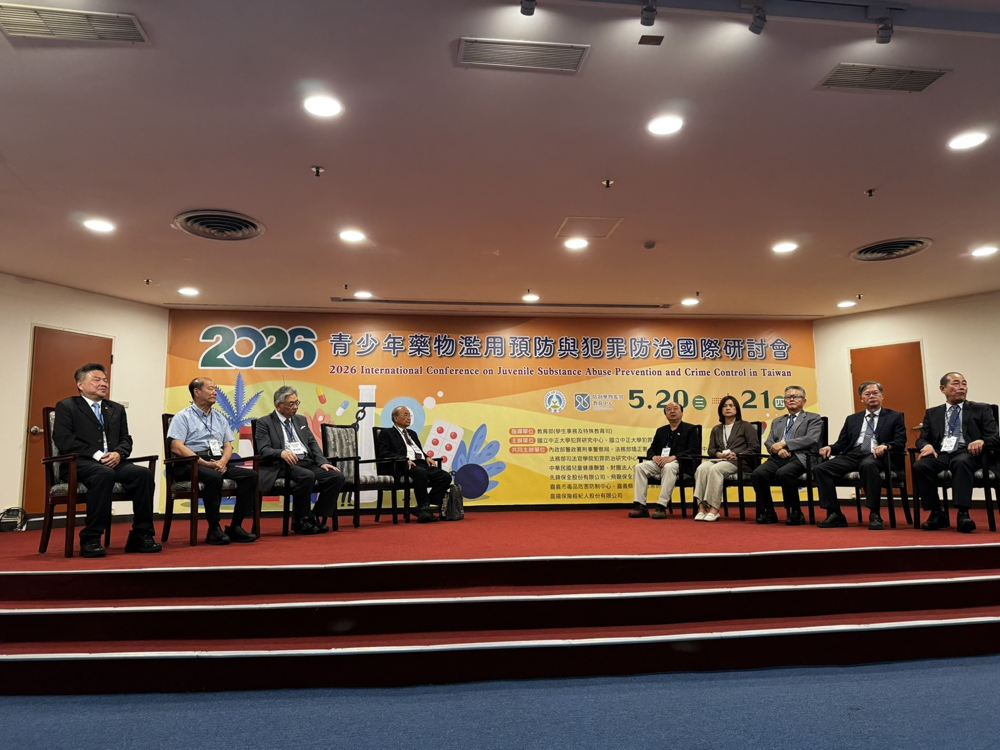
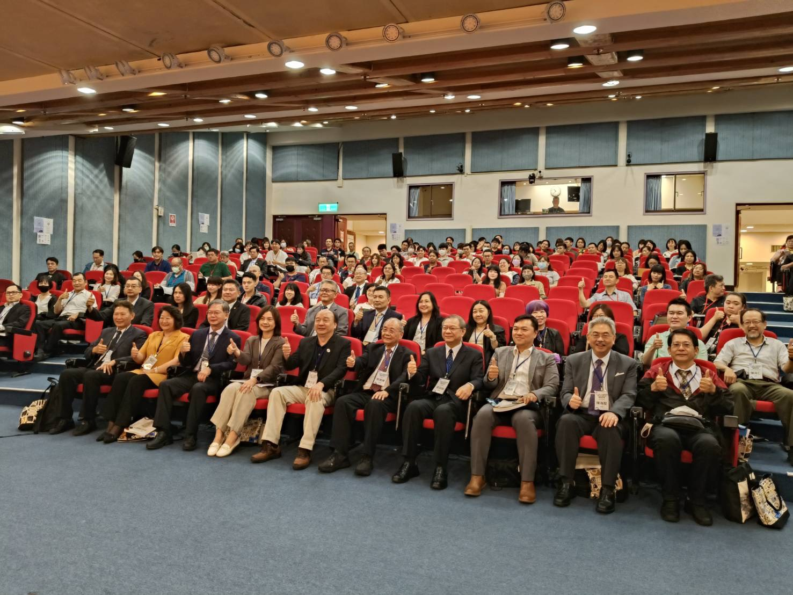
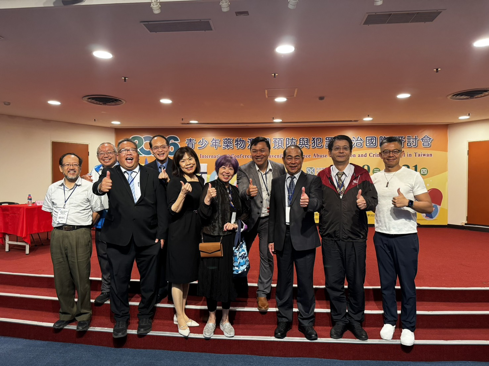
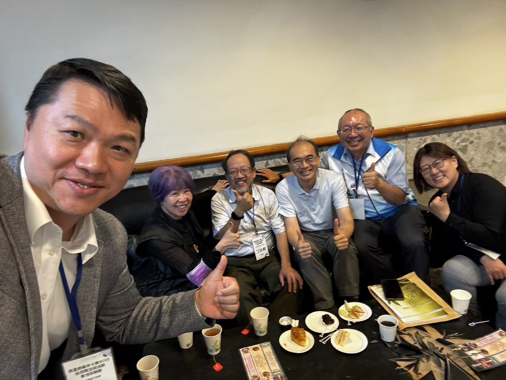
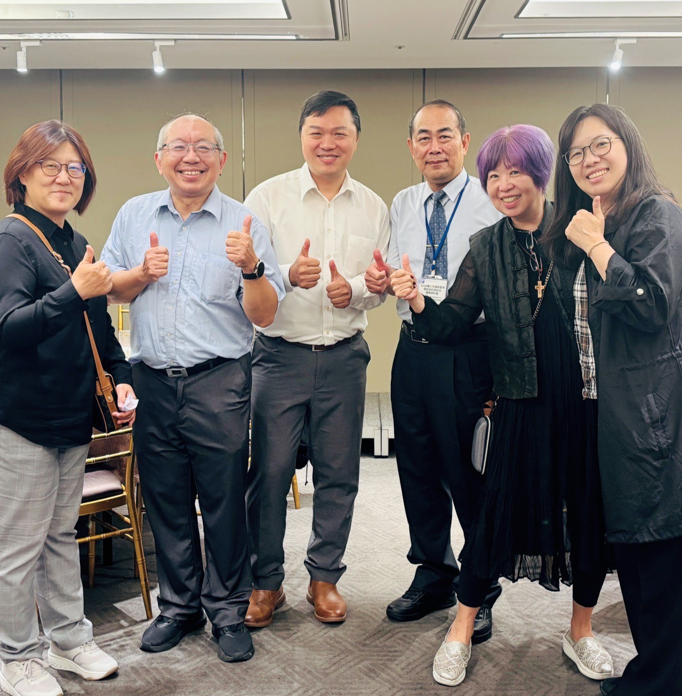

楊士隆教授 獲頒中華民國犯罪學學會終身成就獎
研討會期間，中華民國犯罪學學會於 5 月 20 日現場頒發「115 年度終身成就獎」予中正大學犯罪防治學系特聘教授楊士隆，表彰其畢生對我國犯罪學研究與毒品防治政策的卓越貢獻。由犯罪學學會榮譽理事長蔡德輝、中正大學校長蔡少正、學會理事長李修安共同頒授。
楊士隆教授近 30 年來著作等身，出版《犯罪學》、《監獄學》、《犯罪心理學》等近 20 冊專書，發表近 90 篇論文並主持近 70 件政府研究計畫。95 年建言政府設立「毒品危害防制中心」；105 年推動成立「毒品防制基金」；108 年協助法務部矯正署實施「以證據為導向的科學實證毒品犯處遇計畫」。本研討會由楊教授擔任第一天大會主持人、Day 1 第 3 場主講人（少年涉毒幫派詐欺）、Day 1 第 5 場主講人（與陳為堅副院長共同，流行病學調查）。
資料來源：中華民國犯罪學學會提供；中時新聞網報導（賴佑維）。
兩日入口 · Two-Day Entry
九場專題報告
Keynotes & Country Reports
從唾液篩檢、打詐 2.0、少年涉毒幫派，到泰國／香港／日本三國大麻政策比較—— 九場專題以「校園不是抓捕罪犯的地方」開場，最終匯流到「依託咪酯電子煙危機」與「東亞政策三維度框架」。
九場論文＋綜合座談
Papers & Panel Discussion
從SEM × ML 雙引擎、K他命 12 年世代研究、香港隱形少數族裔， 到全人復元、依託咪酯結婚蛋糕、少輔會結構改革。 三盟（國教盟＋共善＋中華民國兒童健康聯盟）共主持三場論文，正式介入處遇與法制兩條軸線。
活動花絮 · Conference Moments






兩日關鍵數字 · By the Numbers
📌 國教盟 × 共善促進協會 聯合新聞稿（Day 1 發布）
反毒打詐不能只靠查緝
籲政府建立「接住孩子」的校園與家庭安全網
「青少年涉毒已與詐欺、幫派、性剝削及太空油電子煙交織，民團肯定政府跨部會努力，呼籲從早期辨識、家庭介入到新興毒品預警全面升級。」
由國教行動聯盟理事長王瀚陽 × 共善促進協會理事長陳尚仁於 5 月 21 日聯名發布。新聞稿從 Day 1 九場專題的內容萃取出四點具體政策呼籲：
- 教育部應推動非侵入式校園早期辨識與輔導制度，讓篩檢、保密、輔導、轉銜與家庭合作形成完整流程。
- 行政院打詐政策應納入青少年防吸收專章，將車手、人頭帳戶、門號提供、幫派吸收與校園詐欺招募列為重點防制。
- 衛福部、教育部、法務部與警政署應建立跨部會兒少個案管理平台，讓涉毒、涉詐、幫派與性剝削風險不再被分散處理。
- 政府應針對依託咪酯電子煙與其他新興毒品建立快速預警、校園教育、社群平台監測及醫療端通報機制。
三盟 × 雙核 · The Five Actors
本研討會由中正大學楊士隆教授（恩師）× 曾淑萍教授（高足）——一對跨世代的學術師承雙核，與國教盟、共善促進協會、兒童健康聯盟三盟共同主辦， 形成「學界師生傳承 × 民間倡議轉化」的政策共同體。 這五位 actor 在本研討會中各自承擔不同角色，但匯流到同一個訊息：「接住孩子」的校園與家庭安全網。
學界雙核 · Academic Anchors
楊士隆 特聘教授｜本研討會大會主持人 · 終身成就獎得主 · 學術師承核心
長期推動：95 年建言設立「毒品危害防制中心」｜105 年推動「毒品防制基金」｜108 年協助實施「以證據為導向的科學實證毒品犯處遇計畫」。
學術傳承：楊教授長期指導後繼學者，曾淑萍教授即為其親炙弟子之一，兩代學者在本研討會共同坐鎮中正大學犯罪防治學系的核心場次（Day 1 第 3 場）。
→ 查看 Day 1 第 3 場紀錄｜Day 1 第 5 場
曾淑萍 教授｜楊士隆教授親炙弟子、學術傳承核心
本研討會擔任Day 1 第 3 場共同主講（與恩師楊士隆教授）——負責 16 名矯正學校少年深度訪談的質性研究主軸，揭露毒品、幫派、詐欺三者交織為惡性循環的核心發現，並提出「脫離犯罪的關鍵不是法律，而是『重要他人』」這一精神標誌性論點。
Day 2 第 9 場與談人——回應葉碧翠副教授「理性算計或成癮衝動」三類受刑人（純詐欺／純毒品／涉毒詐欺）多面向比較研究。
師承關係的意義：楊／曾兩位學者代表中正大學犯罪防治學系跨世代學術傳承——從楊教授 95 年建言設立「毒品危害防制中心」的政策路徑，延續到曾教授對少年司法與生命歷程的細緻處遇研究。三盟（國教盟／共善／中華民國兒童健康聯盟）的政策合作對象，正是這個學術師承共同體。
→ 查看 Day 1 第 3 場紀錄｜Day 2 第 9 場
民間三盟 · Civil Society Coalition
國教行動聯盟｜本研討會出席代表
- 理事長 王瀚陽——Day 1 聯合新聞稿共同發起人、Day 2 第 4 場主持人（白鎮福「從刑事嚇阻轉向全人復元」典範論文）。
- 副理事長 張安慈——共同出席兩日全程。
- 理事 唐仙美——共同出席兩日全程。
Day 1 結束當晚由王瀚陽理事長與共善促進協會陳尚仁理事長聯名發布聯合新聞稿——萃取出 4 點政策呼籲（教育部唾液篩檢、行政院打詐青少年防吸收專章、跨部會兒少個案管理、依託咪酯預警）。Day 2 第 4 場主持，標誌國教盟議題版圖延伸至少年司法處遇。
議題版圖：教育政策、家長運動、青少年安全網、全人復元典範倡議。
→ 查看 Day 2 第 4 場紀錄｜聯合新聞稿
社團法人共善促進協會｜本研討會出席代表
- 理事長 陳尚仁——Day 1 聯合新聞稿共同發起人、Day 2 第 1 場主持人（鄭元皓 × Dr. Shun-Yung Kevin Wang「SEM × 機器學習」開場論文）。
- 秘書長 張文昌——同時擔任國教盟常務理事，是兩會結盟的具體象徵與制度橋樑。
- 副秘書長 駱怡汝——共同出席兩日全程。
議題版圖：信仰社群、公共倫理、社會復歸、再犯防止之科學化推動。陳尚仁理事長是少年司法「全人復元」典範跨界倡議的核心推手之一；張文昌秘書長的「國教盟常務理事 × 共善秘書長」雙重身份，使兩會在組織層面就具備天然合作介面。
→ 查看 Day 2 第 1 場紀錄
中華民國兒童健康聯盟｜本研討會出席代表
- 理事長 林志嘉——親自蒞臨主持Day 2 第 7 場（鄭瑞隆教授「少年輔導委員會結構功能之探討」）。林志嘉理事長長期投入兒童權益、健康權與少年福利政策倡議，於本研討會中代表中華民國兒童健康聯盟以最高層級參與。
兒童健康聯盟在本研討會的角色不可低估——林志嘉理事長親自主持的鄭瑞隆教授論文，是 Day 2 整日論文場唯一直球針對「少年輔導委員會主管機關」進行結構性質疑的場次。鄭教授明確主張少輔會主管機關應由內政部警政署轉移至衛生福利部，揭示少輔會 50 年來「美麗的延續（錯誤）」需被正視。
由林志嘉理事長親自主持這場論文，本身就是政治訊號——意味著中華民國兒童健康聯盟正式以倡議者身份介入少年司法的結構法制改革。本場與國教盟主場（Day 2 第 4 場「全人復元」處遇典範）形成「處遇典範 × 結構法制」雙軸協作，是本研討會兒少倡議的核心軸線。
議題版圖：兒童健康權、少年福利、少事法修法倡議、跨部會兒少政策整合、衛福主管化倡議。
結盟戰略意義：林志嘉理事長的政治經歷（含長期國會與立法歷練）為三盟結盟提供法案立法路徑的關鍵橋樑——能將學界研究與民間倡議轉化為實際法案推動力。
→ 查看 Day 2 第 7 場紀錄
三盟×雙核的政策行動藍圖
本研討會的學界×民間結構，把「實證 → 倡議 → 政策」三階段串連起來：
- 學界產出（楊士隆 + 曾淑萍 + 鄭瑞隆 + 白鎮福 + 葉碧翠 + 陳娟瑜 + 賴擁連 等）→ 質性訪談、量化模型、系統性回顧、SEM × ML 預測介面。
- 民間轉化（國教盟 + 共善 + 中華民國兒童健康聯盟）→ Day 1 聯合新聞稿 4 點呼籲、Day 2 雙主場主持。
- 政策標的：教育部學特司、行政院打詐辦、衛福部心健司／食藥署、法務部矯正署——對應 4 點呼籲。
建議下一步：三盟可考慮以「三盟聯名行動」（國教盟＋共善＋中華民國兒童健康聯盟）形式，推動少事法第 13 次修法、少輔會主管機關轉移衛福、跨部會兒少個案管理平台立法——三大母法（少事法、毒防條例、兒少權法）並進改革。
跨日主軸 · Cross-Day Themes
主題一 ｜ 「健康促進取代治安懲罰」是兩日的最強共識
主題二 ｜ 「同儕與好奇心」是用毒與用藥的共同起點
主題三 ｜ 「電子煙＋液態毒品化」是當前最大威脅
主題四 ｜ 詐欺與毒品已企業化、青少年化、複合化
主題五 ｜ 「分類化／精準化／整合化」三化處遇
完整議程目錄 · Complete Session Directory
| 時間 | 場次 | 主持／與談 |
|---|---|---|
| DAY 1 · 2026.05.20（Wed）｜九場專題報告 | ||
| 10:30-11:00 | 專題演講（一）｜唾液篩檢在校園毒品防制的展望 郭鐘隆 特聘教授（臺師大） | 主持：蔡宜靜 教育部學特司司長 （議程原訂朱俊彰次長，實際蔡宜靜司長出席） |
| 11:00-11:30 | 專題演講（二）｜詐欺犯罪之新近發展、防制對策與挑戰 張榮興 警政署署長（廖訓誠副署長代） | 主持：馮成 法務部次長 |
| 11:30-12:00 | 專題演講（三）｜少年涉毒行為與幫派、詐欺之關聯性 楊士隆 特聘教授／曾淑萍 教授（中正大學） | 主持：蔡德輝 名譽教授 |
| 13:40-14:10 | 專題報告（一）｜毒品與性拐賣青少年關係 Dr. Xin Ren（Cal State Sacramento）／賴擁連 教授（中正） | 主持：劉建宏 亞洲犯罪學會主席 |
| 14:10-14:40 | 專題報告（二）｜青少年藥物濫用盛行率、流行病學調查 陳為堅 副院長（NHRI）／楊士隆 特聘教授 | 主持：李德 亞洲藥防會會長 |
| 15:00-15:30 | 專題報告（三）｜The California Paradox（講員出席，本聯盟未現場紀錄） Dr. Shih Lung Huang（Cal State Sacramento）／與談：許華孚 教授 | 主持：林憲銘 矯正署署長 |
| 15:30-16:00 | 專題報告（四）｜泰國開放娛樂性大麻對社會及個人身心之衝擊 Dr. Rasmon Kalayasiri（Chulalongkorn）／陳巧雲 教授 | 主持：鄭瑞隆 院長 |
| 16:00-16:30 | 專題報告（五）｜香港青少年藥物濫用現況與防治對策 Dr. Zhong Hua（香港中文大學）／馬躍中 理事長 | 主持：林錦村 檢察長 |
| 16:30-17:00 | 專題報告（六）｜日本青少年藥物濫用之現況與防治對策 戴伸峰 教授／廖泊喬 醫師 | 主持：蕭淑芬 院長 |
| DAY 2 · 2026.05.21（Thu）｜九場論文＋綜合座談 | ||
| 09:00-09:30 | 論文報告（一）｜施用毒品多元處遇成效與再犯預測：SEM × ML 鄭元皓 助理研究員（司法官學院）／Dr. Shun-Yung Kevin Wang（Tarleton State） | 主持：陳尚仁 共善促進協會理事長 |
| 09:30-10:00 | 論文報告（二）｜K他命使用對台灣青少年健康後果 陳娟瑜 教授（陽明交通大學）／沈勝昂 系主任 | 主持：章光明 系主任 |
| 10:10-10:40 | 論文報告（三）｜香港青少年藥物濫用比較路徑：隱形少數族裔 vs 主流 Dr. Xi Chen（嶺南大學）／Dr. Ming-Li Hsieh（Wisconsin-Eau Claire） | 主持：鄭添成 主任 |
| 11:00-11:30 | 論文報告（四）｜從「刑事嚇阻」轉向「全人復元」國教盟主場 白鎮福 助理研究員（司法官學院）／許詩淇 副教授（中央警察大學） | 主持：王瀚陽 國教盟理事長 |
| 11:30-12:00 | 論文報告（五）｜二級毒品依託咪酯偵防查緝模式：結婚蛋糕為框架 賴擁連 教授（中正）／劉璟薇 助理教授（警大）／郭鐘隆 特聘教授 | 主持：林故廷 副局長 |
| 13:30-14:00 | 論文報告（六）｜全球受監禁青少年物質使用：17 國 43 篇系統性回顧 Dr. Tzu-Ying Lo（St. John's University）／林英琦 主任 | 主持：黃蘭瑛 所長 |
| 14:00-14:30 | 論文報告（七）｜少年輔導委員會結構功能之探討中華民國兒童健康聯盟主場 鄭瑞隆 教授兼院長（中正）／許福生 系主任（警大） | 主持：林志嘉 中華民國兒童健康聯盟理事長 |
| 14:30-15:00 | 論文報告（八）｜台灣少年詐欺犯生命歷程之探究 許華孚 教授／黃光甫 博士（中正）／董旭英 教授（成大） | 主持：徐吉志 參議 |
| 15:30-16:00 | 論文報告（九）｜理性算計或成癮衝動：詐欺、毒品與混合型受刑人多面向比較 葉碧翠 副教授（警大）／曾淑萍 教授（中正） | 主持：洪信旭 司長 |
| 16:00-17:00 | 綜合座談｜少年藥物濫用、犯罪與防治 8 位實務界與學界專家（警政、檢察、海巡、矯正、警校、公衛） | 主持：邱紹洲 局長／徐吉志 參議 |
資料來源 · Sources & Methods
本紀錄網站的整理方式
- 投影片影像：現場手機拍攝（Day 1 共 193 張、Day 2 上午 109 張、Day 2 下午 79 頁／頁面），點擊可放大。
- 第 4 場（白鎮福）：因現場無拍照，由議事手冊 PDF 自動轉成 21 張投影片 jpg。
- 錄音檔：共 23 段 m4a/aac/mp3，使用 OpenAI Whisper large-v3-turbo 模型本地轉錄（中文 prompt 含技術詞彙）。第二天錄音轉錄因系統限制中斷，本網站內容以投影片＋議事手冊為主，逐字稿可後續補做。
- 議程資料：2026_05國際研討會議程0421.pdf。
- 終身成就獎：照片、影片、新聞稿由中華民國犯罪學學會提供；新聞報導出自中時新聞網（賴佑維記者）。
- 整理者：以投影片與議事手冊內容為主、錄音為輔；少數場次因錄音不完整以投影片為主要依據。
閉幕致詞 · Closing Remarks｜楊士隆 特聘教授
「此國際研討會不僅深化國內外在青少年藥物濫用與犯罪防治領域之交流合作，更為我國未來推動相關政策、教育宣導及實務工作奠定堅實基礎，對提升青少年保護與社會安全具有深遠意義。」
—— 楊士隆 特聘教授
國立中正大學犯罪防治學系暨犯罪研究中心主任
本日獲頒中華民國犯罪學學會「115 年度終身成就獎」